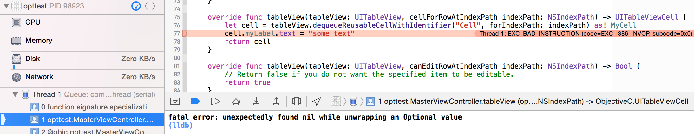
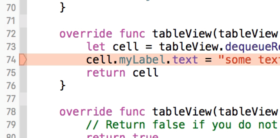

What does "Fatal error: Unexpectedly found nil while unwrapping an Optional value" mean?
My Swift program is crashing with EXC_BAD_INSTRUCTION and one of the
following similar errors. What does this error mean, and how do I fix it?
Fatal error: Unexpectedly found nil while unwrapping an Optional value
or
Fatal error: Unexpectedly found nil while implicitly unwrapping an Optional value
This post is intended to collect answers to "unexpectedly found nil" issues, so that they are not scattered and hard to find. Feel free to add your own answer or edit the existing wiki answer.
Answer
Background: What’s an Optional?
In Swift, Optional<Wrapped> is an option type: it can contain any value from
the original ("Wrapped") type, or no value at all (the special value nil).
An optional value must be unwrapped before it can be used.
Optional is a generic type, which means that Optional<Int> and
Optional<String> are distinct types — the type inside <> is called the
Wrapped type. Under the hood, an Optional is an enum with two cases:
.some(Wrapped) and .none, where .none is equivalent to nil.
Optionals can be declared using the named type Optional<T>, or (most
commonly) as a shorthand with a ? suffix.
var anInt: Int = 42 var anOptionalInt: Int? = 42 var anotherOptionalInt: Int? // `nil` is the default when no value is provided var aVerboseOptionalInt: Optional<Int> // equivalent to `Int?` anOptionalInt = nil // now this variable contains nil instead of an integer
Optionals are a simple yet powerful tool to express your assumptions while writing code. The compiler can use this information to prevent you from making mistakes. From The Swift Programming Language:
Swift is a type-safe language, which means the language helps you to be clear about the types of values your code can work with. If part of your code requires a
String, type safety prevents you from passing it anIntby mistake. Likewise, type safety prevents you from accidentally passing an optionalStringto a piece of code that requires a non-optionalString. Type safety helps you catch and fix errors as early as possible in the development process.
Some other programming languages also have generic option types: for example, Maybe in Haskell, option in Rust, and optional in C++17.
In programming languages without option types, a particular "sentinel" value
is often used to indicate the absence of a valid value. In Objective-C, for
example, nil (the null pointer) represents the lack of an object. For
primitive types such as int, a null pointer can't be used, so you would need
either a separate variable (such as value: Int and isValid: Bool) or a
designated sentinel value (such as -1 or INT_MIN). These approaches are
error-prone because it's easy to forget to check isValid or to check for the
sentinel value. Also, if a particular value is chosen as the sentinel, that
means it can no longer be treated as a valid value.
Option types such as Swift's Optional solve these problems by introducing a
special, separate nil value (so you don't have to designate a sentinel
value), and by leveraging the strong type system so the compiler can help you
remember to check for nil when necessary.
Why did I get “ _Fatal error: Unexpectedly found nil while unwrapping an
Optional value_ ”?
In order to access an optional’s value (if it has one at all), you need to unwrap it. An optional value can be unwrapped safely or forcibly. If you force-unwrap an optional, and it didn't have a value, your program will crash with the above message.
Xcode will show you the crash by highlighting a line of code. The problem occurs on this line.

This crash can occur with two different kinds of force-unwrap:
1. Explicit Force Unwrapping
This is done with the ! operator on an optional. For example:
let anOptionalString: String? print(anOptionalString!) // <- CRASH
Fatal error: Unexpectedly found nil while unwrapping an Optional value
As anOptionalString is nil here, you will get a crash on the line where
you force unwrap it.
2. Implicitly Unwrapped Optionals
These are defined with a !, rather than a ? after the type.
var optionalDouble: Double! // this value is implicitly unwrapped wherever it's used
These optionals are assumed to contain a value. Therefore whenever you access an implicitly unwrapped optional, it will automatically be force unwrapped for you. If it doesn’t contain a value, it will crash.
print(optionalDouble) // <- CRASH
Fatal error: Unexpectedly found nil while implicitly unwrapping an Optional value
In order to work out which variable caused the crash, you can hold ⌥ while
clicking to show the definition, where you might find the optional type.

IBOutlets, in particular, are usually implicitly unwrapped optionals. This is
because your xib or storyboard will link up the outlets at runtime, after
initialization. You should therefore ensure that you’re not accessing outlets
before they're loaded in. You also should check that the connections are
correct in your storyboard/xib file, otherwise the values will be nil at
runtime, and therefore crash when they are implicitly unwrapped. When fixing
connections, try deleting the lines of code that define your outlets, then
reconnect them.
When should I ever force unwrap an Optional?
Explicit Force Unwrapping
As a general rule, you should never explicitly force unwrap an optional with
the ! operator. There may be cases where using ! is acceptable – but you
should only ever be using it if you are 100% sure that the optional contains a
value.
While there may be an occasion where you can use force unwrapping, as you know for a fact that an optional contains a value – there is not a single place where you cannot safely unwrap that optional instead.
Implicitly Unwrapped Optionals
These variables are designed so that you can defer their assignment until later in your code. It is your responsibility to ensure they have a value before you access them. However, because they involve force unwrapping, they are still inherently unsafe – as they assume your value is non-nil, even though assigning nil is valid.
You should only be using implicitly unwrapped optionals as a last resort. If you can use a lazy variable, or provide a default value for a variable – you should do so instead of using an implicitly unwrapped optional.
However, there are a few scenarios where implicitly unwrapped optionals are beneficial, and you are still able to use various ways of safely unwrapping them as listed below – but you should always use them with due caution.
How can I safely deal with Optionals?
The simplest way to check whether an optional contains a value, is to compare
it to nil.
if anOptionalInt != nil { print("Contains a value!") } else { print("Doesn’t contain a value.") }
However, 99.9% of the time when working with optionals, you’ll actually want to access the value it contains, if it contains one at all. To do this, you can use Optional Binding.
Optional Binding
Optional Binding allows you to check if an optional contains a value – and
allows you to assign the unwrapped value to a new variable or constant. It
uses the syntax if let x = anOptional {...} or if var x = anOptional
{...}, depending if you need to modify the value of the new variable after
binding it.
For example:
if let number = anOptionalInt { print("Contains a value! It is \(number)!") } else { print("Doesn’t contain a number") }
What this does is first check that the optional contains a value. If it does
, then the ‘unwrapped’ value is assigned to a new variable (number) – which
you can then freely use as if it were non-optional. If the optional doesn’t
contain a value, then the else clause will be invoked, as you would expect.
What’s neat about optional binding, is you can unwrap multiple optionals at the same time. You can just separate the statements with a comma. The statement will succeed if all the optionals were unwrapped.
var anOptionalInt : Int? var anOptionalString : String? if let number = anOptionalInt, let text = anOptionalString { print("anOptionalInt contains a value: \(number). And so does anOptionalString, it’s: \(text)") } else { print("One or more of the optionals don’t contain a value") }
Another neat trick is that you can also use commas to check for a certain condition on the value, after unwrapping it.
if let number = anOptionalInt, number > 0 { print("anOptionalInt contains a value: \(number), and it’s greater than zero!") }
The only catch with using optional binding within an if statement, is that you can only access the unwrapped value from within the scope of the statement. If you need access to the value from outside of the scope of the statement, you can use a guard statement.
A guard statement allows you to define a condition for success – and the
current scope will only continue executing if that condition is met. They are
defined with the syntax guard condition else {...}.
So, to use them with an optional binding, you can do this:
guard let number = anOptionalInt else { return }
(Note that within the guard body, you must use one of the control transfer statements in order to exit the scope of the currently executing code).
If anOptionalInt contains a value, it will be unwrapped and assigned to the
new number constant. The code after the guard will then continue
executing. If it doesn’t contain a value – the guard will execute the code
within the brackets, which will lead to transfer of control, so that the code
immediately after will not be executed.
The real neat thing about guard statements is the unwrapped value is now available to use in code that follows the statement (as we know that future code can only execute if the optional has a value). This is a great for eliminating ‘pyramids of doom’ created by nesting multiple if statements.
For example:
guard let number = anOptionalInt else { return } print("anOptionalInt contains a value, and it’s: \(number)!")
Guards also support the same neat tricks that the if statement supported, such
as unwrapping multiple optionals at the same time and using the where
clause.
Whether you use an if or guard statement completely depends on whether any future code requires the optional to contain a value.
Nil Coalescing Operator
The Nil Coalescing Operator is a nifty shorthand version of the ternary
conditional operator, primarily designed to convert optionals to non-
optionals. It has the syntax a ?? b, where a is an optional type and b
is the same type as a (although usually non-optional).
It essentially lets you say “If a contains a value, unwrap it. If it doesn’t
then return b instead”. For example, you could use it like this:
let number = anOptionalInt ?? 0
This will define a number constant of Int type, that will either contain
the value of anOptionalInt, if it contains a value, or 0 otherwise.
It’s just shorthand for:
let number = anOptionalInt != nil ? anOptionalInt! : 0
Optional Chaining
You can use Optional Chaining in order to call a method or access a property
on an optional. This is simply done by suffixing the variable name with a ?
when using it.
For example, say we have a variable foo, of type an optional Foo instance.
var foo : Foo?
If we wanted to call a method on foo that doesn’t return anything, we can
simply do:
foo?.doSomethingInteresting()
If foo contains a value, this method will be called on it. If it doesn’t,
nothing bad will happen – the code will simply continue executing.
(This is similar behaviour to sending messages to nil in Objective-C)
This can therefore also be used to set properties as well as call methods. For example:
foo?.bar = Bar()
Again, nothing bad will happen here if foo is nil. Your code will simply
continue executing.
Another neat trick that optional chaining lets you do is check whether setting
a property or calling a method was successful. You can do this by comparing
the return value to nil.
(This is because an optional value will return Void? rather than Void on a
method that doesn’t return anything)
For example:
if (foo?.bar = Bar()) != nil { print("bar was set successfully") } else { print("bar wasn’t set successfully") }
However, things become a little bit more tricky when trying to access
properties or call methods that return a value. Because foo is optional,
anything returned from it will also be optional. To deal with this, you can
either unwrap the optionals that get returned using one of the above methods –
or unwrap foo itself before accessing methods or calling methods that return
values.
Also, as the name suggests, you can ‘chain’ these statements together. This
means that if foo has an optional property baz, which has a property qux
– you could write the following:
let optionalQux = foo?.baz?.qux
Again, because foo and baz are optional, the value returned from qux
will always be an optional regardless of whether qux itself is optional.
map and flatMap
An often underused feature with optionals is the ability to use the map and
flatMap functions. These allow you to apply non-optional transforms to
optional variables. If an optional has a value, you can apply a given
transformation to it. If it doesn’t have a value, it will remain nil.
For example, let’s say you have an optional string:
let anOptionalString:String?
By applying the map function to it – we can use the
stringByAppendingString function in order to concatenate it to another
string.
Because stringByAppendingString takes a non-optional string argument, we
cannot input our optional string directly. However, by using map, we can use
allow stringByAppendingString to be used if anOptionalString has a value.
For example:
var anOptionalString:String? = "bar" anOptionalString = anOptionalString.map {unwrappedString in return "foo".stringByAppendingString(unwrappedString) } print(anOptionalString) // Optional("foobar")
However, if anOptionalString doesn’t have a value, map will return nil.
For example:
var anOptionalString:String? anOptionalString = anOptionalString.map {unwrappedString in return "foo".stringByAppendingString(unwrappedString) } print(anOptionalString) // nil
flatMap works similarly to map, except it allows you to return another
optional from within the closure body. This means you can input an optional
into a process that requires a non-optional input, but can output an optional
itself.
try!
Swift's error handling system can be safely used with Do-Try-Catch:
do { let result = try someThrowingFunc() } catch { print(error) }
If someThrowingFunc() throws an error, the error will be safely caught in
the catch block.
The error constant you see in the catch block has not been declared by us
- it's automatically generated by catch.
You can also declare error yourself, it has the advantage of being able to
cast it to a useful format, for example:
do { let result = try someThrowingFunc() } catch let error as NSError { print(error.debugDescription) }
Using try this way is the proper way to try, catch and handle errors coming
from throwing functions.
There's also try? which absorbs the error:
if let result = try? someThrowingFunc() { // cool } else { // handle the failure, but there's no error information available }
But Swift's error handling system also provides a way to "force try" with
try!:
let result = try! someThrowingFunc()
The concepts explained in this post also apply here: if an error is thrown, the application will crash.
You should only ever usetry! if you can prove that its result will never
fail in your context - and this is very rare.
Most of the time you will use the complete Do-Try-Catch system - and the
optional one, try?, in the rare cases where handling the error is not
important.
Resources
- Apple documentation on Swift Optionals
- When to use and when not to use implicitly unwrapped optionals
- Learn how to debug an iOS app crash
Suggest
TL;DR answer
With very few exceptions, this rule is golden:
Avoid use of !
Declare variable optional (?), not implicitly unwrapped optionals (IUO)
(!)
In other words, rather use:var nameOfDaughter: String?
Instead of:var nameOfDaughter: String!
Unwrap optional variable using if let or guard let
Either unwrap variable like this:
if let nameOfDaughter = nameOfDaughter { print("My daughters name is: \(nameOfDaughter)") }
Or like this:
guard let nameOfDaughter = nameOfDaughter else { return } print("My daughters name is: \(nameOfDaughter)")
This answer was intended to be concise, for full comprehension read accepted answer
Resources
- Avoiding force unwrapping